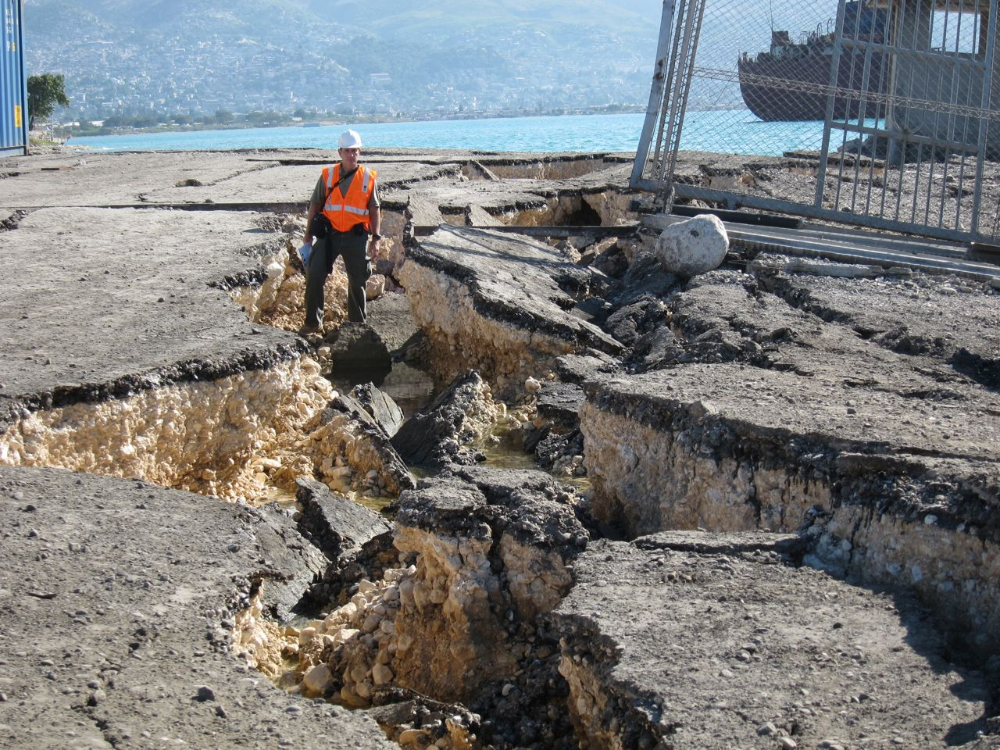
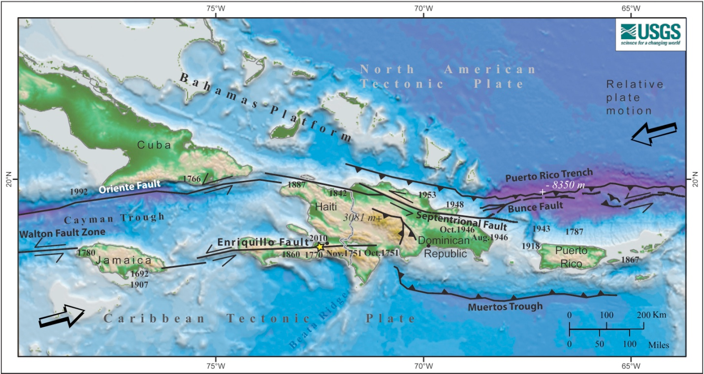

Imagine a scene:
You are sitting at home in your small, one-room apartment in Haiti's Capital, Port-au-Prince.
The sun is setting and the air is starting to cool.
You are making dinner for your family when you feel the ground start to shake.
You look around in confusion as the shaking gets stronger and stronger. The walls of your home creak and groan as the earthquake intensifies, and the pictures on the walls rattle and fall to the ground. You grab your children and run outside, just as the walls of your apartment start to crumble. You huddle together in the street, terrified, as the earthquake continues to rage. You remember hearing that Haiti is located on a fault line and that earthquakes are relatively common, but you never expected one this strong.
You are not alone. Millions of other Haitians are also experiencing the same thing. A magnitude 7.0 earthquake has struck the country with devastating force, killing thousands and leaving millions more homeless. The damage is widespread and the recovery will be long and difficult. But even in the midst of this tragedy, your people are resilient. They are helping each other to rebuild their lives and their country, and manage the chaos of a natural disaster of this scale.
By the numbers, this earthquake is difficult to comprehend.
Let's take a deeper look at how this disaster unfolded.
The following diagram from the New York Times illustrates the locations most impacted by the disaster.

So, we have seen how, due to the earthquake, more than one million people were displaced from their homes and forced to live in makeshift camps. Many buildings collapsed or were severely damaged, including the presidential palace, the parliament, the cathedral, and dozens of hospitals and schools.
To better understand the long-term impact of this disaster on the Haitian landscape, let's compare some key indicators before and after the earthquake. Drag the sliders below to see how important landmarks were affected.
National Palace
Residential Area Near Port-au-Prince
And if these photos from space make it difficult to get a sense of scale, here is an example of the force of the quake, with a human for reference.
To understand how this disaster affected Haiti so profoundly, let's take a deeper look into the mechanics of the earthquake that caused this level of change and destruction to the nation.
First, it is important to understand that the earthquake occured along the Enriquillo-Plantain Garden fault zone. (Or the Enriquillo fault, for short.)
The following map marks the epicenter of the quake with a yellow star.
The Enriquillo fault is a strike-slip fault system that runs along the boundary between the Caribbean and North American tectonic plate. A strike-slip fault is a type of fault where two parts of the earth slide past each other horizontally, creating shear stress. In this case, the Caribbean plate was moving eastward relative to the North American plate.

The earthquake occurred when the accumulated stress along the fault was released in a sudden slip, about 5 feet 11 inches on average.
The earthquake was shallow, with a depth of only 8.1 miles, which amplified its destructive effects on the surface. Shallow earthquakes tend to cause more damage than deep ones, because the seismic waves have less distance to travel and lose less energy along the way. Shallow earthquakes can also produce stronger ground shaking and surface faulting, which can damage buildings and infrastructure.
The 2010 Haiti earthquake was a major turning point in the history of the country. It brought to light some deep-rooted social, economic, and political problems that had plagued Haiti for decades. It also highlighted the vulnerability of Haiti to natural disasters, as it lies on a fault line and is prone to hurricanes, floods, and landslides.
Additionally, it mobilized a global response that aimed to support the recovery and reconstruction of the country. The international community pledged millions of dollars in humanitarian aid and development assistance, and sent thousands of troops, police, and relief workers to help with the emergency. Many countries, organizations, and individuals expressed solidarity and compassion with the Haitian people, and vowed to help them build back better.
However, the progress made in the past 13 years has been slow and unevenly distributed, and many challenges remain. Despite the massive international aid and humanitarian response that followed, many Haitians still live in precarious conditions, facing poverty, food insecurity, lack of basic services, and political instability. The recovery efforts have been unfortunately hampered by corruption, bureaucracy, lack of coordination, and recurrent natural hazards such as hurricanes and floods. Even after all this time since the tragedy, Haiti is still working on long-term solutions to address its underlying vulnerabilities and building a more resilient future.
Test your understanding! How much did you learn?